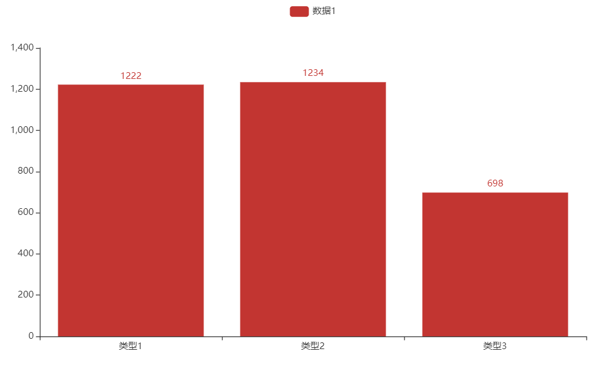
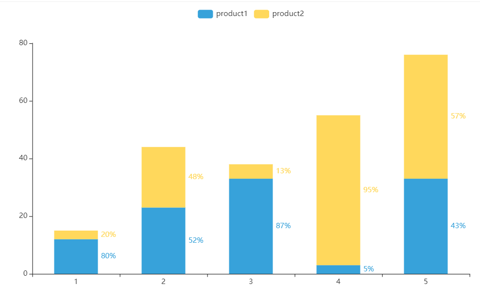
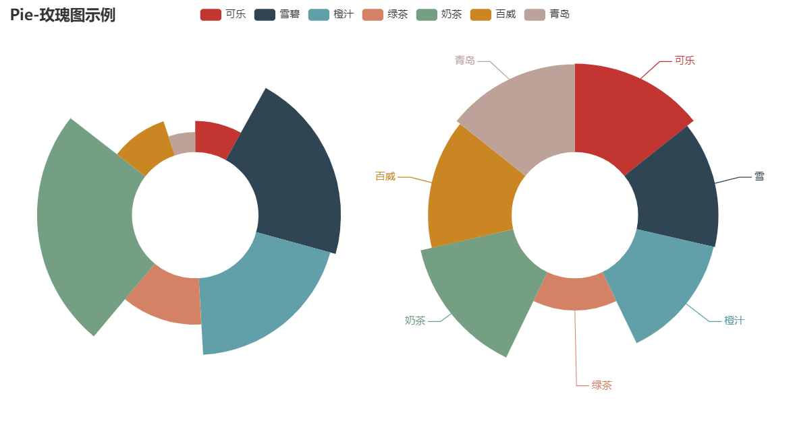

Python主要有两种数据作图方法：
matplotlib 简单方便，适合数值作图与科学作图（论文发表）pyecharts 流程复杂，但功能强大。图形为交互式，适合项目开发、商业分析。（国人开发 ）Pyecharts库 pyecharts 是一个用于生成 Echarts 图表的类库。而Echarts 是百度开源的一个数据可视化 JS 库。
用 Echarts 生成的图可视化效果非常棒，为了与 Python 进行对接，方便在 Python 中直接使用数据生成图，pyecharts的作者写了此项目。
官网：https://pyecharts.org
GitHub地址：https://github.com/pyecharts/pyecharts
安装 命令行窗口中，通过以下命令完成安装
可通过此方式查看当前版本：
1 2 import pyecharts print (pyecharts.__version__)
导包 ：
1 2 from pyecharts.charts from [图形类别]
关于上述代码中的【图形类别】，是在设置不同类型的图形时，导入不同的对象
如：Bar、Pie……
最新的pyecharts支持链式调用
基本图表 柱状图 简单示例 1 2 3 4 5 6 7 8 9 10 11 12 13 14 15 16 17 18 19 from pyecharts import options as optsfrom pyecharts.charts import Barbar = Bar() bar.add_xaixs(["类型1" ,"类型2" ,"类型3" ]) bar.add_yaixs("数据1" ,[1222 ,1234 ,698 ]) bar.render() b = ( Bar() .add_xaxis(["类型1" ,"类型2" ,"类型3" ]) .add_yaxis("数据1" ,[1222 ,1234 ,698 ]) .render("/demo/bartest.html" ) )
这样，即可生成一个最简单的柱状图，如下：

实现单类多柱 实现一个类别里有多个数据，如疫情每个地区拥有确诊人数和治愈人数。
注意，之后的文章中，出现的类目，即表示普通意义上x轴的“类别”
1 2 3 4 5 6 7 8 9 10 11 b = ( Bar() .add_xaxis(["类型1" ,"类型2" ,"类型3" ]) .add_yaxis("数据1" ,[1222 ,1234 ,698 ]) .add_yaxis("数据2" ,[123 ,234 ,345 ]) .add_yaxis("数据x" ,[...]) .render("/demo/bartest.html" ) )
实现多据占比 实现多个数据并成一个柱形，显示占比，效果如下：

1 2 3 4 5 6 7 8 9 10 11 12 13 14 15 16 17 18 19 20 21 22 23 24 25 26 27 28 29 30 31 32 33 34 35 36 37 38 39 40 41 42 43 44 45 46 47 48 49 50 51 52 53 54 55 56 57 58 list1 = [ 1222 , 1234 , 698 ] bar.add_yaxis("数据1" ,list1) list1 = [ {'value' :1222 }, {'value' :1234 }, {'value' :698 } ] list1 = [ {"value" :1222 ,"percent" :1222 /(1222 +123 )}, {"value" :1234 ,"percent" :1234 /(1234 +234 )}, {"value" :698 ,"percent" :698 /(698 +345 )} ] list2 = [ {"value" :123 ,"percent" :123 /(1222 +123 )}, {"value" :234 ,"percent" :234 /(1234 +234 )}, {"value" :345 ,"percent" :345 /(698 +345 )} ] from pyecharts.commons.utils import JsCodeb = ( Bar() .add_xaxis(["类型1" ,"类型2" ,"类型3" ]) .add_yaxis("数据1" ,list1,stack="stack1" , category_gap="50%" ) .add_yaxis("数据2" ,list2,stack="stack1" , category_gap="50%" ) .set_series_opts( label_opts=opts.LabelOpts( position="right" , formatter=JsCode( "function(x){return Number(x.data.percent * 100).toFixed() + '%';}" ), ) ) .render("demo/bartest.html" ) )
上述代码运行得到的图形与前面给出的示例有出入，原因是没有设置主题。
pyecharts内置有10+个主题，之后再慢慢介绍
实现标签倾斜 1 2 3 4 5 6 7 8 9 10 11 12 13 14 15 16 17 18 19 20 21 22 b = ( Bar() .add_xaxis( [ "名字很长的X轴标签1" , "名字很长的X轴标签2" , "名字很长的X轴标签3" , "名字很长的X轴标签4" , "名字很长的X轴标签5" , "名字很长的X轴标签6" , ] ) .add_yaxis("商家A" , [10 , 20 , 30 , 40 , 50 , 40 ]) .add_yaxis("商家B" , [20 , 10 , 40 , 30 , 40 , 50 ]) .set_global_opts( xaxis_opts=opts.AxisOpts(axislabel_opts=opts.LabelOpts(rotate=-15 )), ) .render("demo/bartest.html" ) )
此外，还可以通过代码实现x-y坐标的翻转
实现滑动条 许多时候，当数据/类目过多时，不宜在有限的“屏幕”上展示图，因此我们可以添加"水平滑动条"
官方名称是：区域缩放配置
1 2 3 4 5 6 7 8 9 10 11 12 13 14 15 16 17 18 19 20 21 22 23 from pyecharts import options as optsfrom pyecharts.charts import Barfrom pyecharts.faker import Fakerc = ( Bar() .add_xaxis(Faker.days_attrs) .add_yaxis("商家A" , Faker.days_values) .set_global_opts( datazoom_opts=opts.DataZoomOpts(), ) .render("demo/bartest.html" ) )
实现工具箱显示 1 2 3 4 5 6 7 .set_global_opts( toolbox_opts=opts.ToolboxOpts(), legend_opts=opts.LegendOpts(is_show=False ), )
工具箱拥有许多拓展功能，如：区域选择，转化为折线图，保存图片等等
实现标注 1 2 3 4 5 6 7 8 9 10 11 12 13 14 15 16 17 18 19 20 21 22 23 24 25 26 27 28 29 .set_series_opts( label_opts=opts.LabelOpts(is_show=False ), markpoint_opts=opts.MarkPointOpts( data=[ opts.MarkPointItem(type_="max" , name="最大值" ), opts.MarkPointItem(type_="min" , name="最小值" ), opts.MarkPointItem(type_="average" , name="平均值" ), ] ), markline_opts=opts.MarkLineOpts( data=[ opts.MarkLineItem(type_="min" , name="最小值" ), opts.MarkLineItem(type_="max" , name="最大值" ), opts.MarkLineItem(type_="average" , name="平均值" ), ] ), markpoint_opts=opts.MarkPointOpts( data=[opts.MarkPointItem(name="自定义标记点" , coord=[x[2 ], y[2 ]], value=y[2 ])] ), markline_opts=opts.MarkLineOpts( data=[opts.MarkLineItem(y=50 , name="自定义标注线" )] )
饼状图 简单演示 1 2 3 4 5 6 7 8 9 10 11 12 13 14 15 16 17 18 19 20 21 22 23 24 from pyecharts import options as optsfrom pyecharts.charts import Piefrom pyecharts.faker import Fakerc = ( Pie() .add("" , [list (z) for z in zip (Faker.choose(), Faker.values())]) .set_colors(["blue" , "green" , "yellow" , "red" , "pink" , "orange" , "purple" ]) .set_global_opts(title_opts=opts.TitleOpts(title="Pie-基本示例" )) .set_series_opts(label_opts=opts.LabelOpts(formatter="{b}: {c}" )) .render("demo/pie_base.html" ) )
实现外观修改 1 2 3 4 5 6 7 8 9 10 11 12 13 14 15 .add( "" , [list (z) for z in zip (Faker.choose(), Faker.values())], center=["35%" , "50%" ], ) .set_global_opts( title_opts=opts.TitleOpts(title="Pie-调整位置" ), legend_opts=opts.LegendOpts(pos_left="15%" ), )
1 2 3 4 5 6 7 8 9 .add( "" , [list(z) for z in zip(Faker.choose(), Faker.values())], radius=["40%" , "75%" ], )
玫瑰图
在半径修改成圆环之下，将每一分块依据其大小显示为不规则
关键字参数：rosetype 值：radius、areaNone：规则 radius：扇区圆心角展现数据的百分比，半径展现数据的大小 area：所有扇区圆心角相同，仅通过半径展现数据大小 1 2 3 4 5 6 7 8 9 10 11 12 13 14 15 16 17 18 19 20 21 22 23 24 v = Faker.choose() c = ( Pie() .add( "" , [list (z) for z in zip (v, Faker.values())], radius=["30%" , "75%" ], center=["25%" , "50%" ], rosetype="radius" , label_opts=opts.LabelOpts(is_show=False ), ) .add( "" , [list (z) for z in zip (v, Faker.values())], radius=["30%" , "75%" ], center=["75%" , "50%" ], rosetype="area" , ) .set_global_opts(title_opts=opts.TitleOpts(title="Pie-玫瑰图示例" )) .render("demo/pie.html" ) )
示例图：

从上述代码和示例图中可见，当多次使用.add()时，可生成多个图
实现内外兼修图 暂时搁浅
矩形树图 雷达图 地图 配置项 全局配置 全局配置项可通过 set_global_options 方法设置
系列配置 主题配置 导包
1 from pyecharts.globals import ThemeType
连接后端框架 Flask框架 参考资料 1.pyecharts官方网站